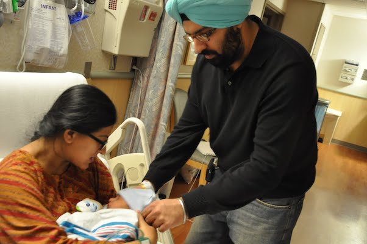
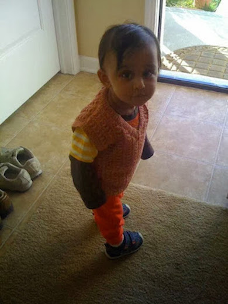

Episode 1
It was fall of 2009. As per doctor's prediction Manraj's baby boy was due in the last week of October. Nani after meeting Aman in Jersey landed Colombus Ohio on 11th of Oct, which was Ajit's birthday too. Both Manraj and Ajit were on the airport to receive Nani. Manraj ate poorely and was little low in energy. Nani took charge to see that she eats well and have proper walk and excercise. Due date crossed and doctor's check up revealed that baby is in perfect health but might take few more days to meet us all.
3rd November late evening Manraj was taken to the hospital. Early in the morning on 4th Nov, we heard cry of our little boy. Nurse wrapped our little prince in a shawl Nani brought as babaji's blessings from Hazoor Sahib Gurudwara. After meeting his Mumma and Papa when 20 minutes old Ridam came to Nani's hands, he opened his eyes, looked sharply at her as if trying to recognise her. It was an exceptional and strange experience for Nani because being a teacher she handled children for the last 2 decades but never had experience to be stared so sharply as it was today. She thanked god for blessing her with an intelligent and sharp grand child. She alerted Manraj also to be on her toes as she has been blessed with an intelligent child.
Episode 2
November 2010: Ridam was turning one. Manraj had to take her candidacy examination in the first week of November itself. It was a week long assignment and a viva voce there upon. Nani travelled from India to US to take care of little Ridam so that Mumma could write her exam without any anxiety.
Ridam was not only firmly footed by this time but could walk and run all around. Nani landed at Detroit airport where Ajit, Manraj, Ridam and Aman were present to receive her. It was a sigh of relief for her to see that Ridam immediately recognised her and became friendly with her. Reaching Columbus Nani and Ridam got along well. Nani took him out for a stroll and enjoyed playing with him . Manraj went to Library to write her test and Ajit to his office. Nani never left Ridam alone as he was a small child and didn't know about his safety.
One day Nani was in the kitchen and Ridam was no where to be seen.
Nani searched him every where, loudly called him many times but didn't get any response.
She was on the verge of crying when she saw Ridam coming out from the laundry room
(Ohio house had a separate laundry room with washer and dryer installed and a shelf above to keep detergents etc.).
When Nani confronted Ridam that what he was doing there and why didn't he reply on Nani's calling...
Ridam looked little scared but tried to divert Nani's attention by speaking out monosyllables like arrrrrrr.
Later Nani talked to Manraj and she cleared the suspense.
She told Nani that Ridam was not allowed to eat Halloween candies and Manraj kept a packet of those candies in the laundry Room.
Poor boy was in search of those candies which were at a height and out of his reach.
Episode 3
Manraj called from her University that her viva voce went well and board has declared her to be successful and she is a Phd candidate now. Nani congratulated her and to little Ridam who was standing near by and listening to the telephonic conversation.
Nani wanted to share this news with the family. Eleven years ago world was not the same as it is today. There were no What's App, no international messaging, no Facebook no Instagram. The easiest way to get connected was to send an email. So Nani decided to write an email to Nanu and Aman Mamu.
In Ohio house computer was in the loft area which was a floor above. Nani thought Ridam to take with her to the computer desk as little Ridam could not be left all alone. Making him sit in her lap, Nani switched on the computer to write an email. Few notifications popped in. Little Ridam who was just an year old and was unable to speak, pointed towards the cross over the notifications and instructed Nani to take cursor over it to make it vanish. Nani was awestruck to see Ridam's observations and his smartness to learn Technology.
Episode 4
Same evening when Manraj returned from University, Nani went to the kitchen to make tea for her. Ridam thought that he should help Nani in cleaning the house. He took a broom which was double his size, and started brooming the floor.
Manraj and Nani sitting on the dining table were enjoying hot sips of tea and chirpy activities of Ridam. Suddenly Nani saw few drops of blood on the floor. She was astonished from where were the blood drops coming? Manraj could immediately make out that Ridam got his finger cut with the blunt end of the broom.
Both of them left their tea there only and got into action. Nani pressed Ridam's bleeding finger and Mumma headed her car towards the hospital. Doctor sealed the wound with a plastering tape and blood stopped oozing out. Both of them had a sigh of relief that Ridam could get proper medical help and was fine then.
Episode 5
Ridam's 1st Birthday celebration was scheduled for 4th of December in a club house located in the near vicinity. After clearing her candidacy examination Manraj started making preparations for the forthcoming event. Ajit and Manraj wanted it to be a memorable day for Ridam and the family.
One afternoon after Ajit left for his office, Manraj, Nani and Ridam boarded in the car and headed towards a Mall to buy some essential things for the party. After making few purchasing Manraj made Nani and Ridam sit near an eating joint, as she had to use rest room nearby. Ridam was running from one place to another. Nani was keeping an eye on him.
She saw a family passing by with their little girl who was around 2 years old sitting in a pram, with a pacifier. Suddenly Nani saw that Ridam with the lightening speed reached near the pram, snatched pacifier from girl's mouth and ran away. Nani tried to follow him, got hold of him and returned pacifier to the family. Feeling so embarrassed Nani deeply apologized to them. Looking at cute little Ridam who was so amused over his glorious act, they just laughed and went away.